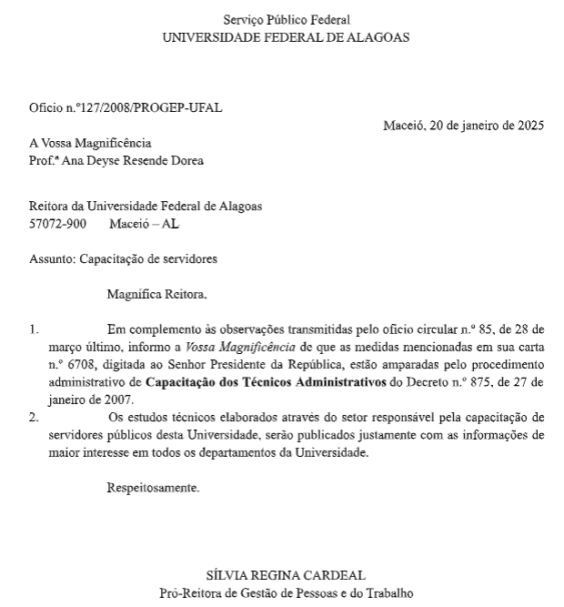
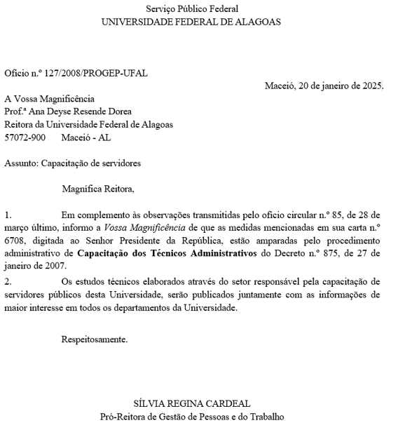

Atividade 2 do Word
Instruções que foram dadas:
- Criar um arquivo Word cumprindo os seguintes requisitos:
- Tamanho do papel: A4
- Margem esquerda: 3,0cm
- Margem Direita: 1,5cm
- Fonte: Times New Roman
- Tamanho da Fonte: 12
- Espaçamento Entre linhas para todo o documento:
Exatamente 16pt
- Aplique o recurso de marcadores e numeração nos dois parágrafos de desenvolvimento
- A tabulação do marcador para o início de cada parágrafo deverá ser de: 2,5 cm
- Digitação de todo o documento com correção no alinhamento, na formatação de fonte, na ortografia e na gramática conforme o modelo.
Confira o resultado ao lado --->


Resultado
Modelo